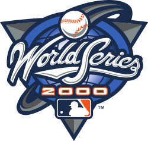

| Home Page | 1969 | 1973 | 1986 | 2015 |

The 2000 World Series was rather disappointing in regards to other Mets apperances. They played the New York Yankees, in what was percieved to be a very even matchup. The series started off with 2 very close Yankee wins, which led to another tight game in which the Mets barely won late in the game. However, now down 2-1, the Mets crumbled as the Yankees took the next 2 games and thus the series. Losing 4 games to 1 is quite poor, despite the games all being relatively tight.